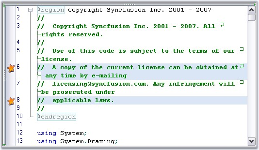

Essential Edit allows you to set a pause at some specified location in the Edit Control by using the Break Points feature. This is done by combining the Line Background and Custom Indicator features. IndicatorMarginClick event can be handled to insert a break point.
|
[C#]
private void editControl1_IndicatorMarginClick(object sender, Syncfusion.Windows.Forms.Edit.IndicatorClickEventArgs e) { // Set breakpoint indicator. this.editControl1.SetCustomBookmark(e.LineIndex, new BookmarkPaintEventHandler(CustomBookmarkPainter));
// Highlight the relevant line. IBackgroundFormat format = this.editControl1.RegisterBackColorFormat(color, Color.Transparent); this.editControl1.SetLineBackColor(e.LineIndex, true, format); } |
|
[VB.NET]
Private Sub editControl1_IndicatorMarginClick(sender As Object, e As Syncfusion.Windows.Forms.Edit.IndicatorClickEventArgs) Handles editControl1.IndicatorMarginClick ' Set breakpoint indicator. Me.editControl1.SetCustomBookmark(e.LineIndex, New BookmarkPaintEventHandler(AddressOf CustomBookmarkPainter))
' Highlight the relevant line. Dim format As IBackgroundFormat = Me.editControl1.RegisterBackColorFormat(color, Color.Transparent) Me.editControl1.SetLineBackColor(e.LineIndex, True, format) End Sub |

Figure 25: Inserting Break Points in Edit Control
A sample which demonstrates setting custom indicators is available in the below sample installation path.
..\My Documents\Syncfusion\EssentialStudio\Version Number\Windows\Edit.Windows\Samples\2.0\Text Navigation\BreakPointDemo